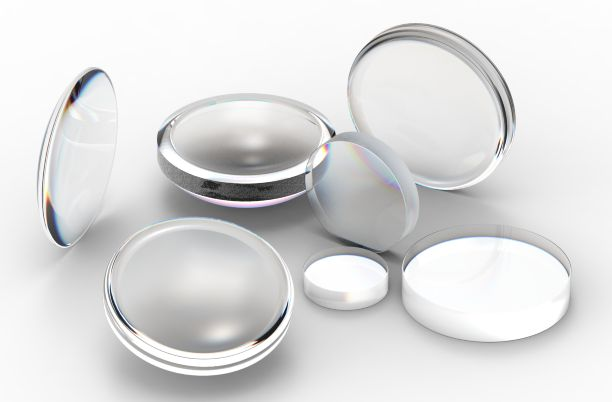
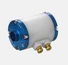
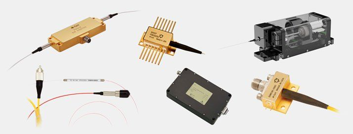
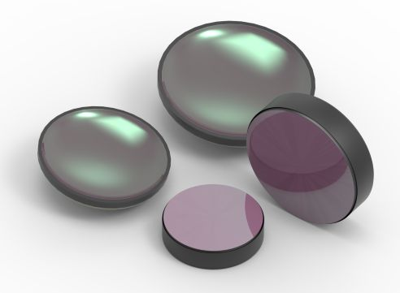
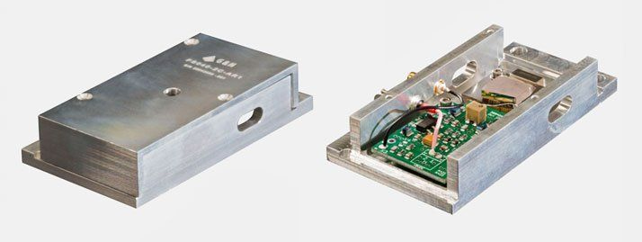
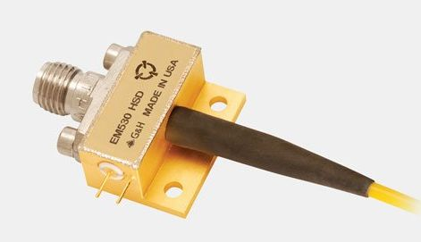
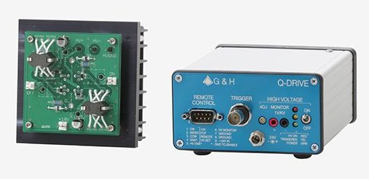
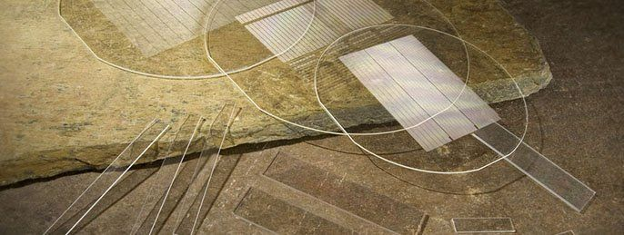
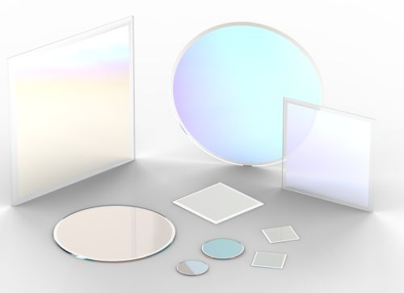

Company profile:
Gooch & Housego PLC

Gooch & Housego PLC
Dowlish Ford
Ilminster TA19 0PF
United Kingdom
| Tel.: | +44 1460 25 6440 |
| Website: | www.goochandhousego.com |
| Social media: | LinkedIn, Twitter, YouTube |
Company Description
Gooch & Housego is a global leader in photonics technology. Our expertise extends from research through the development of prototypes to volume manufacturing and enables innovation and effective manufacturing in the aerospace and defence, industrial, life sciences and scientific research (big science) sectors.
Researching and manufacturing in eleven sites across the USA and UK, G&H are experts across a uniquely broad range of photonic technologies – crystal growth, optical materials processing, acousto-optics and electro-optics, fiber optics, DFB laser modules, precision optics (thin-film coating, birefringent optics, non-linear, planar and aspheric), RF driver electronics in addition to light measurement and calibration solutions.
When combined with the company’s optical, mechanical, electronic and software design capabilities, G&H is able to provide complete optical system design services.
Products
| Product | Description |
|---|---|
| acousto-optic modulators (… and deflectors) |  Our acousto-optic modulators are optimized for low scatter and high laser damage threshold. Rise time, modulation rate, beam diameter, and power handling needs of the application need to be understood in order to identify the best acousto-optic modulator and RF driver solution. We also offer fiber-coupled acousto-optic modulators. |
| aspheric optics |  Our lens processing capabilities include CNC generating, grinding, and polishing. We polish spherical, semi-spherical, and aspheric lenses. 5-axis grinding and polishing machines are utilized for manufacturing high precision aspheric surfaces on optical glass. Single point diamond turning is used for aspheric and diffractive optical elements. |
| cavity dumping (equipment for … and cavity-dumped lasers) |  Pulse pickers and cavity dumpers are high speed acousto-optic modulators that can separate and divert a single laser pulse within a pulse train to a new optical path. Both require a very fast rise time with a low duty cycle. With rise/fall times as short as 4 ns and a variety of materials at our disposal, we can create a complete solution to select individual laser pulses with speed and synchronization. |
| electro-optic modulators |  Gooch & Housego are a leading crystal grower with decades of electro-optic device design experience. We manufacture a comprehensive range of Pockels cells for applications in wavelengths from the UV to the IR. Factors such as average power, repetition rate and the design configuration determine the recommended type of device. Utilizing proprietary crystal growth, fabrication, and polishing techniques, we manufacture both longitudinal and transverse electrode configuration Pockels cells in beta barium oxide (BBO), cadmium telluride (CdTe), potassium dihydrogen phosphate (KDP) and potassium dideuterium phosphate (KD*P). |
| fiber amplifiers |  Gooch & Housego manufacture high-reliability brbium-doped (EDFA) and erbium/ytterbium co-doped (EYDFA) fiber amplifier modules. These amplifiers operate in demanding thermal, vibration, and radiation environments. Offered as OEM modules, our fiber amplifiers can be controlled and monitored through an electrical interface, making them ideal for system integration into laser transmitters, including satellite laser communication terminals. Customized optical performance, enclosures, port configurations, and amplifier arrays in a single housing are available on request. |
| fiber couplers | The G&H line of HI REL fused fiber optic components are deployed in environments such as undersea and space where the costs of component replacement are prohibitive and reliability is of premier concern. G&H is established as a preferred supplier of these components to most major undersea telecommunications equipment manufacturers. Our HI REL capability is built upon the foundation of an extended history of also manufacturing very reliable components for land-based (or terrestrial) systems in volume. |
| fiber optics |  Gooch & Housego’s line of active and passive fiber optic components and modules offer the performance and reliability required for some of the most demanding and challenging applications in the world. Our designs have been qualified and deployed in space applications and are widely used in terrestrial and submarine telecommunications systems. We support customers through all aspects of system development, lending our expertise in integration of end-to-end fiber optic systems and design for harsh environments. From custom packaging of semiconductor devices to fiber optic assemblies and fused biconical tapering, we have developed best in class design and manufacturing techniques to optimize performance and reliability. |
| infrared optics |  We deliver highly integrated, superior performing, infrared optical components leveraging our combination of technical skills, unique manufacturing competencies, and extensive metrology capabilities. We bring together a set of capabilities which enables our customers to combine techniques, even on the same part. A unique, stand-out capability for G&H is our ability to manufacture complex shapes on lenses, such as step profiles or off-axis shapes. |
| laser mirrors |  G&H provide high energy precision mirrors for laser cavities and demanding applications. Our custom high-reflectivity mirrors deliver superior performance and value to customers designing and building laser cavities from small, lightweight range finding lasers to high laser damage threshold industrial lasers. We understand that the smallest defect leads to a system failure. Our goal is to minimize or eliminate system failures due to coating or polishing defects. Precision mirrors are fabricated in a number of shapes and sizes. Conventional optical grade flats or shaped substrates are precision polished and inspected at magnification to ensure there are no underlying defects before coatings. Careful cleaning and coating processes ensure microscopic particles are not encapsulated into the coating. |
| nonlinear crystal materials |  Gooch & Housego designs and produces nonlinear optic (NLO) crystals for nonlinear frequency conversion applications from the deep UV to the far IR. We offer such crystals, complete with AR coatings and packaged in housings, for wavelength conversion and polarization control over a wide spectral range. We offer a wide selection of materials such as β-barium borate (BBO), cadmium selenide (CdSe), cadmium sulfide, (CdS), potassium di-hydrogen phosphate (KDP), and potassium di-deuterium phosphate (KD*P). All are fabricated on a made-to-order basis in-house using advanced orienting, sawing, grinding, and lapping technologies. From one-off to volume OEM applications, we supply bespoke crystals for research and industry use. |
| optical coherence tomography |  Gooch & Housego is an established manufacturer of high quality optical components and optical sub-systems for the biomedical imaging market with manufacturing bases in the UK and the USA. Our extremely wideband optical coupler offers uniform performance over a 140 nm wavelength range for spectral domain OCT, and can be integrated into modules like our OCT optical delay line. We also offer a compact OCT optical spectrometer with high resolution and image capture rate, completing a line of modular OCT components that may be purchased for research and OEM use, or integrated by our engineering team into a customized, complete system. |
| optical frequency shifters |  Transmission through an acousto-optic (AO) device causes the input light to experience a frequency shift equal to the RF drive frequency. Our acousto-optic frequency shifters (AOFS) are optimized for the needs of applications like interferometry, with the ability to achieve high extinction ratio between modes. We offer standard products with frequency shifts of over 300 MHz and integrated low-power AOFS modules in which the RF driver has been built into the housing. Our team can also customize frequency shifters for specific application, including frequency shifts up to 600 MHz. |
| optical modulators |  Acousto-optic multi-channel modulators (AOMC) allow multiple beams to be modulated or deflected independently by integrating an array of transducers with a single acousto-optic crystal. We have minimized crosstalk through proprietary optical and electrical designs to allow concurrent operation of up to 48 channels for modulation, and up to 8 channels for beam deflection. Our multi-channel modulators are known for their reliable operation and high performance. Multi-channel modulators are most often used for high speed applications like micromachining and direct-write lithography, as each beam can be modulated independently. They are also used to increase throughput when writing large media by writing multiple beams at the same time. |
| photodetectors |  Analog optical communication applications continue to serve markets where the expense and overhead of digital conversion is not required. High fidelity applications require a photonic RF signal to be cleanly converted to an electrical RF signal. Gooch & Housego’s line of high speed detectors (HSD) facilitate the crucial conversion at a high bandwidth. Our photodetector designs offer low dark current or noise, and perform with excellent responsivity. |
| Pockels cell drivers |  G&H Pockels cell drivers have been developed to complement our range of Pockels Cells. High quality components are integrated into our designs to maximize lifetime, safety, and reliability. Our Pockels cell drivers include the Q-series Q-switch drivers and R-series regenerative amplifier drivers. Q-switch drivers provide a fast rise time followed by a longer decay time. Regenerative amplifier drivers have a square pulse with a fast rise and fall time, adjustable pulse width and may be operated to 100 kHz or more. The Q series product line includes the Lab Q-Drive, OEM Q-Drive, and QDP models while the R series product line includes the R200, the R200 System, the HVR, and the HVR System. |
| Pockels cells | Gooch & Housego are a leading crystal grower with decades of electro-optic device design experience. We manufacture a comprehensive range of Pockels cells for applications in wavelengths from the UV to the IR. Factors such as average power, repetition rate and the design configuration determine the recommended type of device. Utilizing proprietary crystal growth, fabrication, and polishing techniques, we manufacture both longitudinal and transverse electrode configuration Pockels cells in beta barium oxide (BBO), cadmium telluride (CdTe), potassium dihydrogen phosphate (KDP) and potassium dideuterium phosphate (KD*P). |
| pulse pickers | Pulse pickers and cavity dumpers are high speed acousto-optic modulators that can separate and divert a single laser pulse within a pulse train to a new optical path. Both require a very fast rise time with a low duty cycle. With rise/fall times as short as 4 ns and a variety of materials at our disposal, we can create a complete solution to select individual laser pulses with speed and synchronization. |
| Q switches (active …) |  Our acousto-optic Q-switches are rugged, reliable, and long-lasting, backed by millions of hours of service in the field. We offer low insertion loss, highly efficient acousto-optic Q-switches capable of handling very high peak power, and will draw on our 35 years of experience to match the cavity length, repetition rate, wavelength, beam diameter, polarization state and output power of a laser to the best acousto-optic Q-switch solution. |
| Q switching (equipment for Q switching of lasers) | Our acousto-optic Q-switches are rugged, reliable, and long-lasting, backed by millions of hours of service in the field. We offer low insertion loss, highly efficient acousto-optic Q-switches capable of handling very high peak power, and will draw on our 35 years of experience to match the cavity length, repetition rate, wavelength, beam diameter, polarization state and output power of a laser to the best acousto-optic Q-switch solution. |
| quasi-phase matching (periodically poled nonlinear crystals) |  Gooch & Housego PPLN nonlinear crystals allow for efficient conversion of wavelengths in the range from visible to 5 µm. The poling pattern is lithographically defined and highly customizable. This allows the crystals to be used in a wide range of applications using wavelength conversion. Phase-matching over very long propagation lengths at infrared wavelengths is possible with our congruently grown PPLN manufactured from highly uniform Z-axis wafers. |
| waveplates |  From crystal growth, crystal orientation and cutting, to waveplate fabrication and coating, no other waveplate supplier has as much control over the fabrication stages as G&H. Our waveplates been used in the cutting edge of research at Lawrence Livermore National Laboratory’s NIF project to the most demanding of production environments in semiconductor metrology equipment. For all wavelength ranges, we orient, cut, and polish the optical crystals for waveplate production. Tight internal controls enable better retardation tolerances within and between production runs. Polishing, coating, assembly, and metrology complete the manufacturing process. |
| anti-reflection coatings | |
| beam collimators | |
| beam expanders | |
| Brewster plates | |
| Brewster windows | |
| chirped mirrors | |
| custom optics | |
| dielectric coatings | |
| dielectric mirrors | |
| diffractive optics | |
| etalons | |
| fiber collimators | |
| fiber lasers | |
| fiber polarization controllers | |
| fiber pump combiners | |
| integrating spheres | |
| interferometers | |
| linewidth (narrow-linewidth lasers or equipment for linewidth measurements) | |
| mirrors | |
| mode locking (mode-locked lasers and equipment for …) | |
| optical bonding (… services or machinery) | |
| optical filters | |
| optical flats | |
| optical materials | |
| photonic crystal fibers | |
| RF over fiber | |
| spectrometers | |
| supermirrors |
Information of Gooch & Housego Appears on the Following Pages
Company profile (this page)
Pages with Suppliers for Products
acousto-optic modulators, anti-reflection coatings, aspheric optics, beam collimators, beam expanders, Brewster plates, Brewster windows, cavity dumping, chirped mirrors, custom optics, dielectric coatings, dielectric mirrors, diffractive optics, electro-optic modulators, etalons, fiber amplifiers, fiber collimators, fiber couplers, fiber lasers, fiber optics, fiber polarization controllers, fiber pump combiners, infrared optics, integrating spheres, interferometers, laser mirrors, linewidth, mirrors, mode locking, nonlinear crystal materials, optical bonding, optical coherence tomography, optical filters, optical flats, optical frequency shifters, optical materials, optical modulators, photodetectors, photonic crystal fibers, Pockels cell drivers, Pockels cells, pulse pickers, Q switches, Q switching, quasi-phase matching, RF over fiber, spectrometers, supermirrors, waveplates
Encyclopedia Articles
acousto-optic modulators, cavity dumping, electro-optic modulators, fiber amplifiers, fiber couplers, fiber optics, laser mirrors, nonlinear crystal materials, optical coherence tomography, optical modulators, photodetectors, Pockels cells, pulse pickers, Q switches, Q switching, quasi-phase matching, waveplates
Profiles of Other Suppliers
Gooch & Housego is shown as alternative supplier on 388 pages of other suppliers not having an ad package.
Other Pages
On various pages, a banner can randomly show up which displays a random selection of logos of suppliers with an ad package.